| 日付 | 2021年7月31日（土） - 2021年8月7日（土） | ||||||||
|---|---|---|---|---|---|---|---|---|---|
| 山域 | 東北の山 | ||||||||
| メンバー | 家族（妻、長女・10歳、長男・8歳） | ||||||||
| 山行形態 | 子連れ7泊8日キャンプ | ||||||||
| アクセス | 車、バス | ||||||||
| ルート (Map1) |
|
3日目
本日は岩手は曇予報だが、秋田側が晴れ予報。
今後の天気予報は不安定な予報のため、本日一番行きたかった秋田駒ヶ岳に行くことにする。
八合目の駐車場まで車で行こうとしたが、なんと一般車は進入禁止。
情報収集不足だった。駐車場に車を停めてバスで向かう。
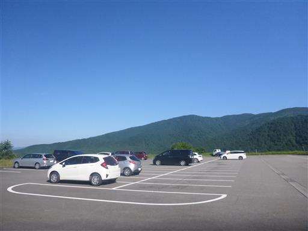
バスで駒ヶ岳八合目に到着。標高1300m。
狭い道路ですれ違いが困難なため、混雑期は入れないようにしているのだろう。
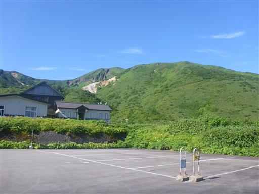
駐車場からの景色。見事な快晴、すでに絶景が広がっている。
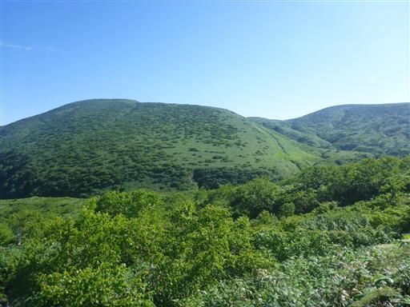
バスの時間に間に合わせるために駆けこんだため、ここで登山の準備。
靴の紐を締め、日焼け止めを塗り、少しパンを食べて、最後尾から出発。
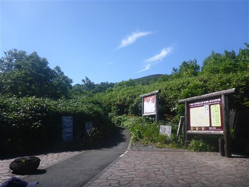
日差しを遮る木が無く暑いので、子供たちの機嫌が悪い。
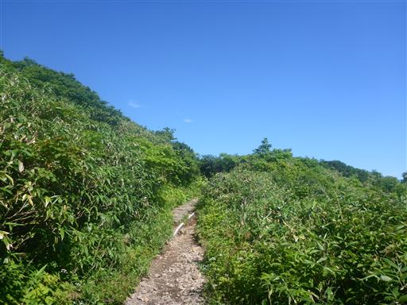
キイチゴ発見。
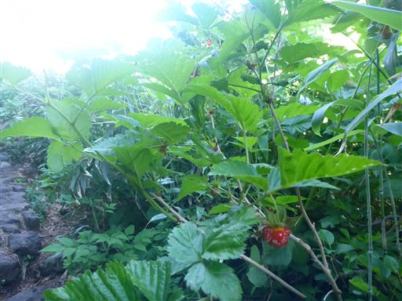
森の中に荒涼とした風景が広がる。
噴火口跡かと思ったら、調べたところ鉱山跡のようだ。
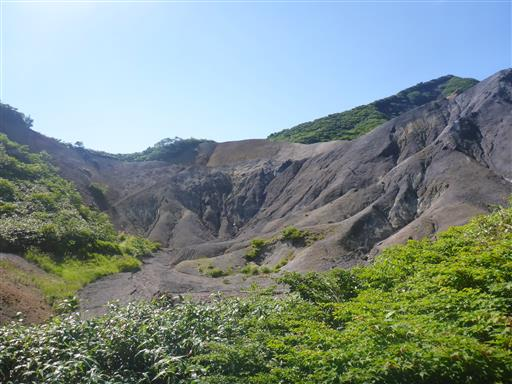
眼下に蛇行する車道が見える。
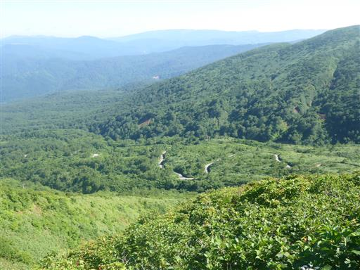
カラマツソウの一種だろうか？蕾が可愛らしい。
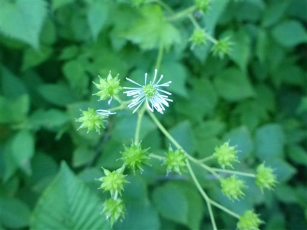
赤い実がなっている。
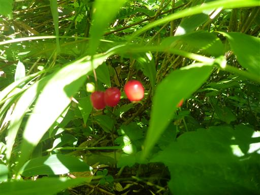
ハクサンシャジン。
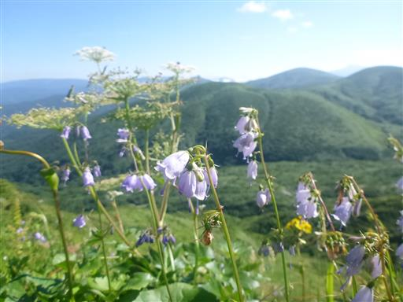
標高を上げると、遠くまで視界が広がる。
左手の山頂が尖がった山が乳頭山、右奥に見えるのは岩手山だ。
岩手山の麓に泊まっていながら雲に隠れて全く姿を現さなかったが、
ついに秋田側からその姿を確認することができた。
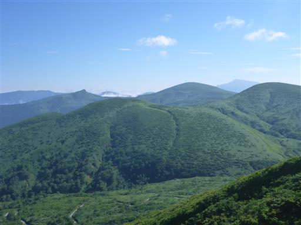
そしてこちらは森吉山。鳥海山かもと思ったが、方角、距離感が全く違った。
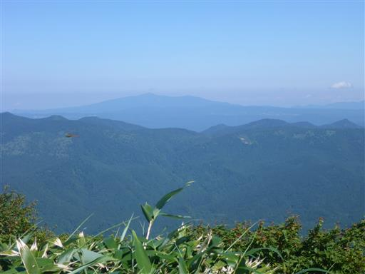
オトシブミを発見。葉っぱを巻いてその中に卵を産むという生態で有名な昆虫だ。
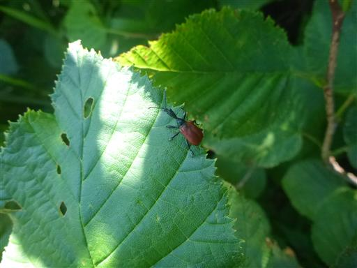
秋田駒ヶ岳の最高峰、男女岳が見えてきた。
ぐるっと回り込んで反対側に登山道が付いている。
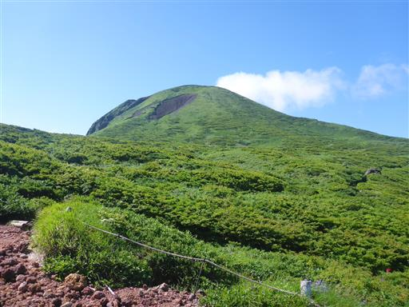
森の中の一本道。この辺りは偽高山帯で高い木は全く見られない。
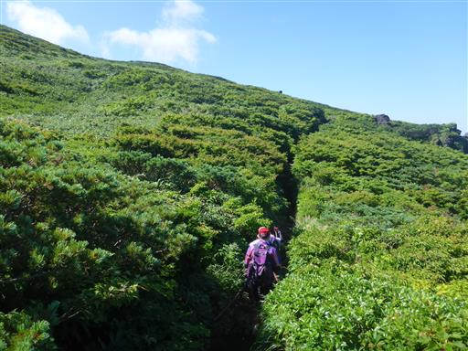
右手に男岳が見えてきた。
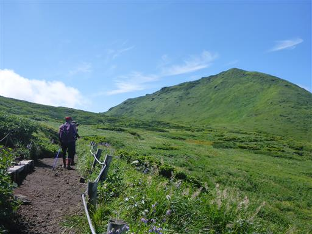
眼下に見えるのは田沢湖。
最大水深423mで、日本一深い湖だ。
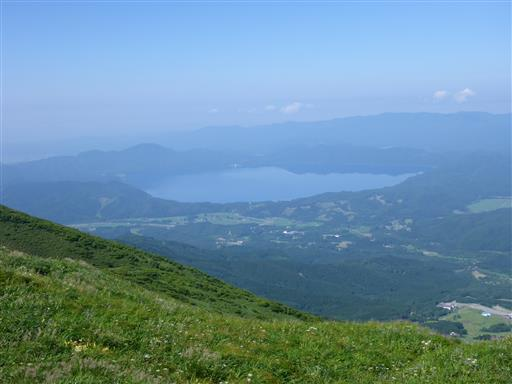
この辺りはお花畑が美しい。こちらはミヤマリンドウ。
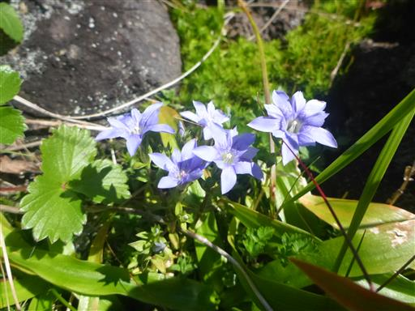
トウゲブキ。
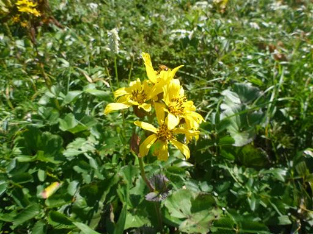
遠くの方に阿弥陀池が見えてきた。どこを見渡しても美しい風景だ。
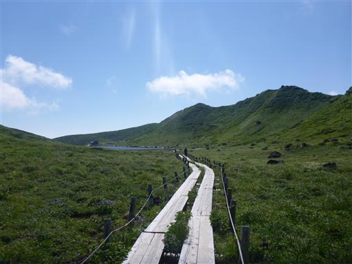
この辺りのお花畑は見事。
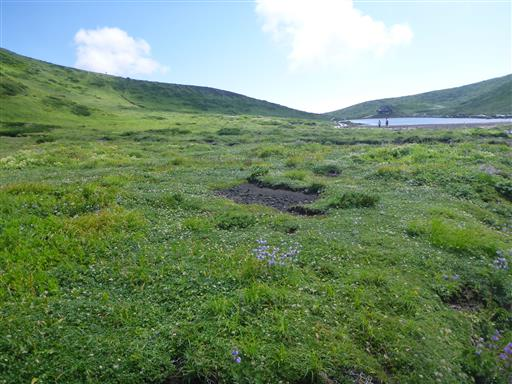
阿弥陀池に到着。周囲に木道が整備されている。
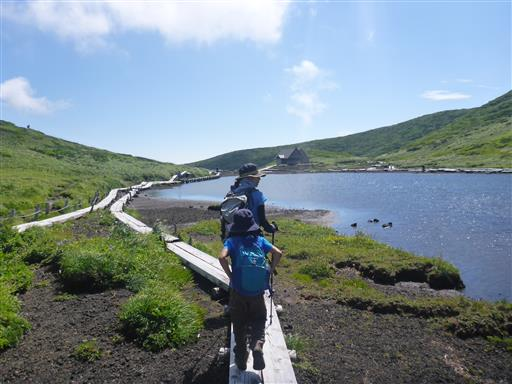
眼下に広がる浄土平。奥に見えるのは岩手山。
少し雲が湧いてきた。
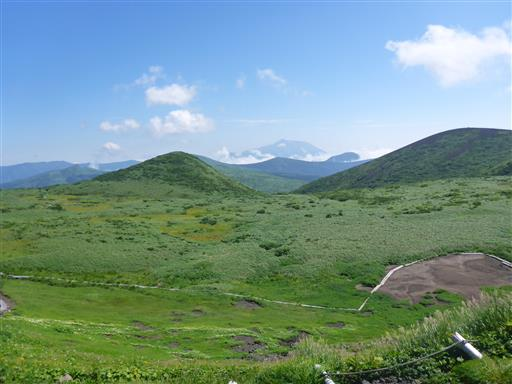
ここから男女岳を往復する。下にザックを置いて空身で歩いている人も多い。
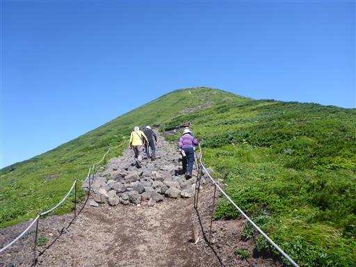
オヤマソバが群落をつくって咲いている。少々地味な花だ。
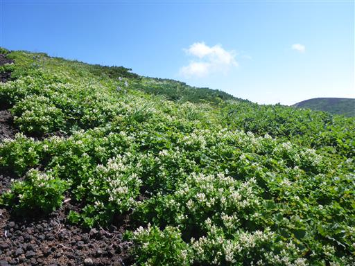
振り返ると阿弥陀池と浄土平が見える。なかなか複雑な地形だ。
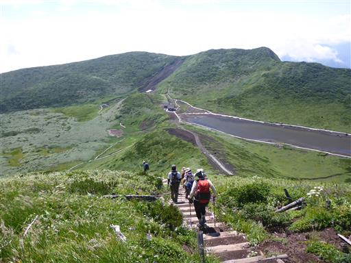
右手に男岳、左に頭だけ見えているのは女岳だ。
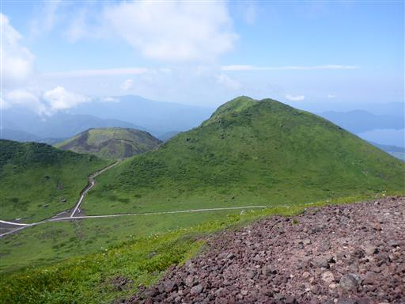
秋田駒ヶ岳の山頂に到着。標高1637m。
東北を代表する名山だ。
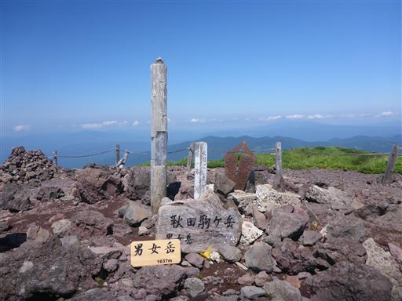
北側には噴火口らしき穴が見える。
最後に爆発したのはいつか分からないが、今では緑に包まれている。
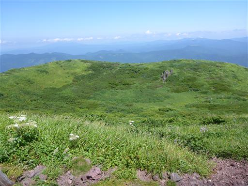
ゆったりとした東北の山らしい稜線。ゆっくり縦走登山をしてみたいものだ。
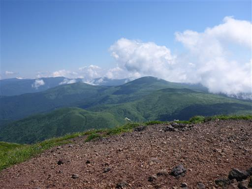
男女岳を下山し、阿弥陀池に戻ってくる。
阿弥陀池から一本の小さな川で水が流れ出している。
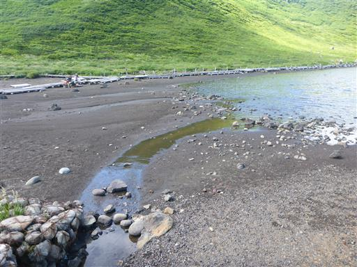
その細い流れは急斜面を経て浄土平に注いでいる。
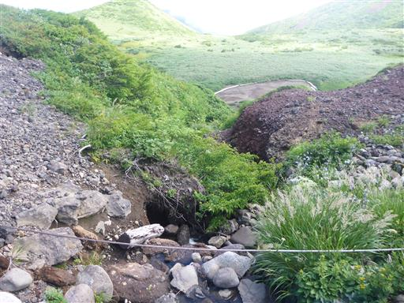
阿弥陀池の畔に建つ阿弥陀池避難小屋。
人が多いので中は覗かず通り過ぎる。
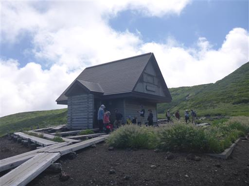
今度は阿弥陀池の対岸を歩いて、池をぐるっと一周する。
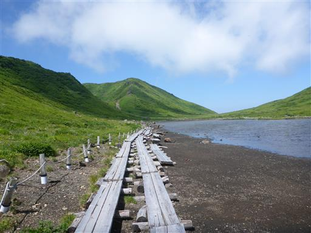
こちらからは、先ほど登った男女岳の姿がきれいに見える。
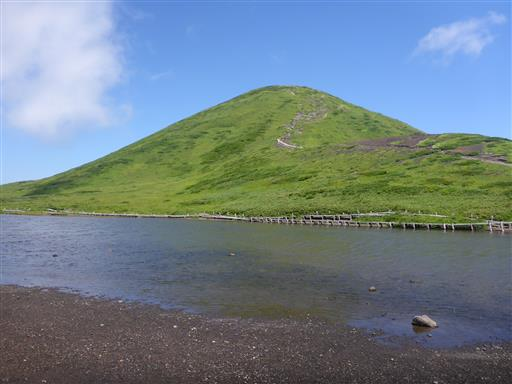
池周辺に咲く色とりどりのお花畑。初夏と比較すると少々地味な花が多い。

阿弥陀池を一周したら、ここから男岳を目指す。
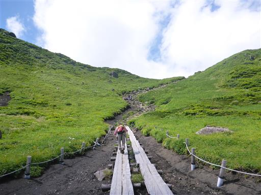
男岳と横岳の峠に着くと、今まで見えなかった景色が広がる。
目の前の山は女岳。残念ながら女岳に通じる登山道はない。

眼下には歩いてきた一本の木道が見える。
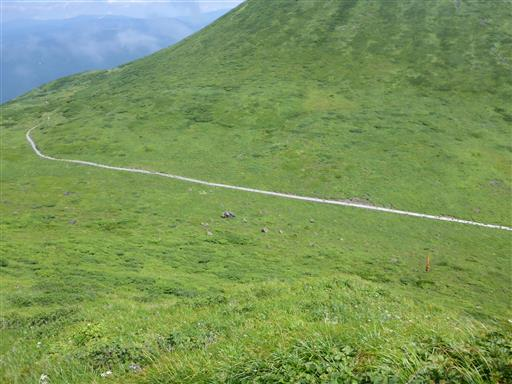
男岳への稜線は少々岩がちな地形だ。
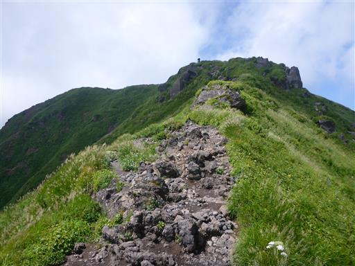
女岳の隣にあるのは小岳。大きな噴火口がぽっかりと開いている。
眼下に見える谷はムーミン谷と呼ばれている。
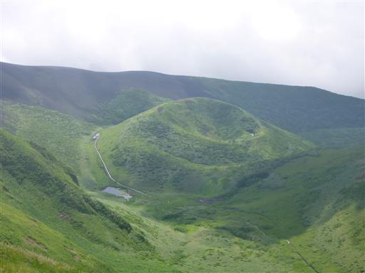
ここから見ると、阿弥陀岳のすぐ横はかなりの急斜面になっていることが分かる。
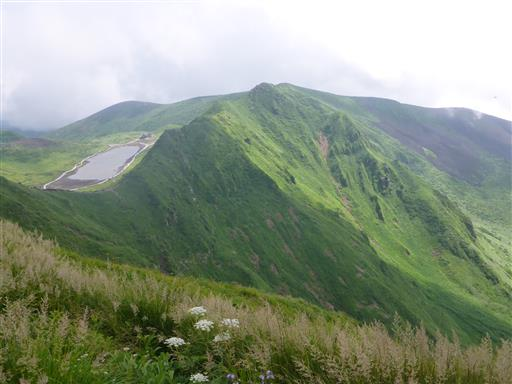
男岳山頂に到着。標高1623m。
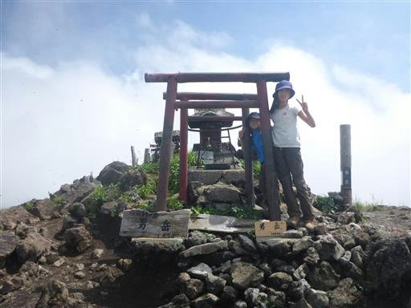
下方に伸びる尾根。こちらのコースから登ってくる人も見られる。
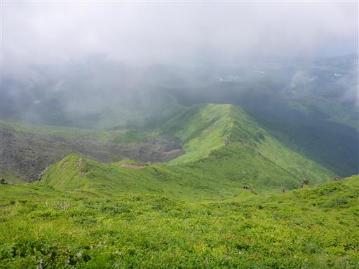
山頂でトンボを捕まえて遊ぶ。
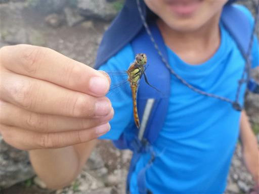
男岳から峠まで戻ってくる。ここから下山するのが楽なのだが、
ムーミン谷を経由する少しロングコースを歩くことにする。
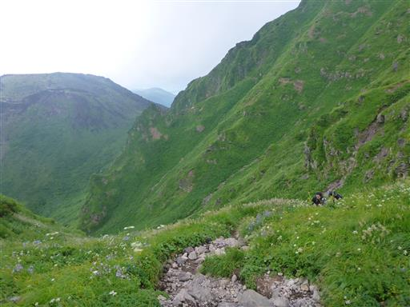
谷に向かって下っていく。
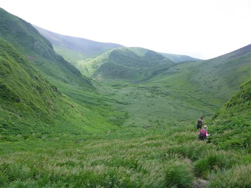
オニアザミだろうか？巨大なアザミだ。
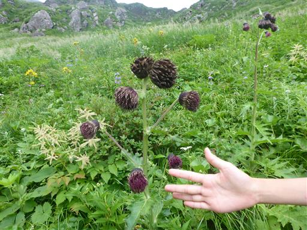
モジャっとした花のつぼみ。
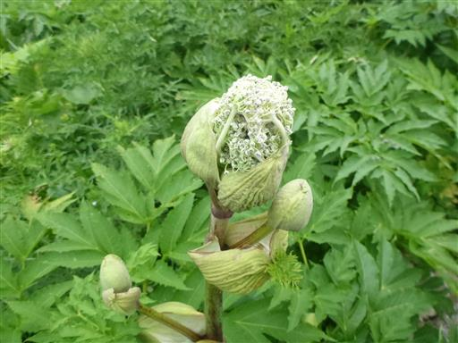
チングルマの綿毛。残念ながら花はもうすべて終わっている。
開花期はさぞ見事だったことだろう。
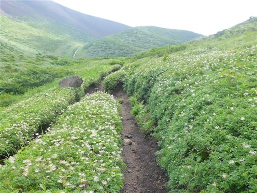
それでも夏の花が目を楽しませてくれる。
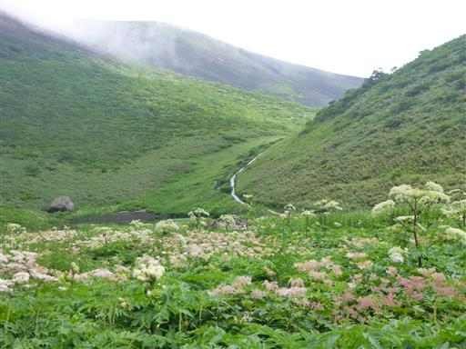
駒池に到着する。景色が良いのでここで昼食をとることにする。
池には多くのオタマジャクシがいる。ヤゴの抜け殻も見られる。
振り返ると素晴らしい風景が広がる。
お花畑、緑のじゅうたん、荒々しい岩壁と非常に美しい。
この辺りもチングルマの群落。
奥に見える尾根は大焼砂と呼ばれる場所だ。
ここにも小さな池がある。かたがり泉水と書かれている。
ウサギギク。
エゾシオガマ。
エゾツツジが少しだけ残っている。
右手を見ると不思議な地形が広がる。
平らな土地の周りを尾根が丸く囲んでいる。ここも噴火口跡なのだろうか？
しばらく歩くと低木帯を抜け出して砂礫地となる。
この小石だらけの地にコマクサが根を下ろしている。
長尾根に到着。延々と砂礫地が広がる。
来た方向を振り返る。左が女岳、真ん中が男岳、手前は小岳だろうか？
砂礫地の斜面に広がるコマクサ。
コマクサのこんな大群落は始めて見た。ものすごい数だ。
この三又に分かれているのは何だろう？
大焼砂を抜け、再び低木帯になる。ところどころにハイマツが見られる。
横岳に到着。標高1582m。風が吹き抜けて涼しい。
左手に再び男女岳が見えてきた。
足元に咲くイワブクロ。この花を見るのは本当に久し振りだ。
焼森山頂に到着。標高1551m。
砂礫地の山頂で大展望が広がるはずだが、だいぶ雲に覆われてしまった。
ここからはバス停に下山するのみ。息子が暑いとうるさいので、先を急ぐ。
バスの時間もちょうど良さそうだ。
無事下山。清水が大量に湧き出ているので、手拭いを濡らして顔を洗う。
秋田駒ヶ岳は変化に富んでおり、いつどこを見ても絵になる素晴らしい山だった。
花の名山として名高く、最盛期は過ぎていたものの花も素晴らしいものだった。
季節を変えコースを変え、何度も登ってみたい。
キャンプ場への帰り道の途中、道の駅雫石あねっこでちょこっと買い物。
電線の部分を切り取られたとっても気になる形の木。
キャンプ場に戻ってくる。夕方は虫取り。これはスズメガだろう。
メスのクワガタ。

夜は花火をして遊ぶ。今夜のキャンプ場は誰もおらず貸し切りだ。